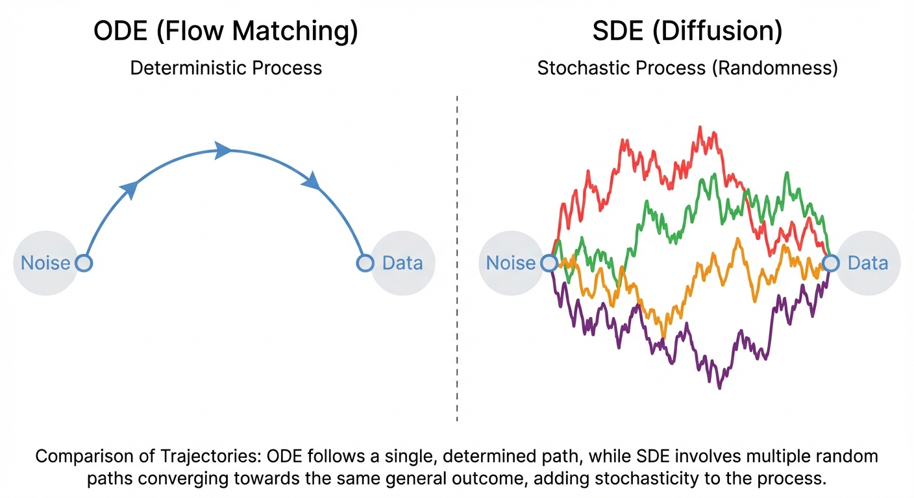

Diffusion & Flow Matching Part 5: Diffusion Models and SDEs
- Diffusion models add stochasticity to the ODE: \(dX_t = u_t(X_t)dt + \sigma_t dW_t\)
- Key insight: We derive SDEs by thinking in terms of infinitesimal updates rather than derivatives
- The Brownian motion term \(dW_t\) represents continuous random perturbations
- Setting \(\sigma_t = 0\) recovers the deterministic ODE from flow matching
Diffusion Models: Adding Stochasticity
In Parts 2-4, we developed flow matching — a framework where a neural network learns a vector field \(u_t^\theta(x)\) that transports noise to data via an ODE:
\[ dX_t = u_t^\theta(X_t) \, dt \]
This is elegant, but there’s another approach that dominated generative modeling before flow matching emerged: diffusion models. Instead of following a deterministic path, diffusion models add randomness at each step.
Why would we want randomness? It turns out that stochasticity can help exploration during sampling, improve sample diversity, and connects to a rich mathematical theory. Let’s see how.
The Problem with Derivatives
Before we add stochasticity, let’s revisit how we think about ODEs. The standard formulation uses derivatives:
\[ \frac{d}{dt} X_t = u_t(X_t) \]
This says: “the instantaneous rate of change of \(X_t\) equals the vector field \(u_t\) evaluated at \(X_t\).”
Derivatives are elegant for deterministic systems, but they become problematic when we want to add randomness. A random process doesn’t have a well-defined derivative in the classical sense — the path is too “jagged” due to the random perturbations.
To add stochasticity properly, we need a different way to think about dynamics — one that doesn’t rely on taking derivatives.
From Derivatives to Infinitesimal Updates
Instead of asking “what is the derivative?”, we can ask: “what happens over a small time step \(h\)?”
Starting from the ODE, we can write:
\[ \frac{1}{h}(X_{t+h} - X_t) = u_t(X_t) + R_t(h) \]
where \(R_t(h)\) is an error term that goes to zero as \(h \to 0\). Rearranging:
\[ X_{t+h} = X_t + h \cdot u_t(X_t) + h \cdot R_t(h) \]
This says: “where you end up = where you started + (small step) × (direction) + (small error)”. As \(h \to 0\), the error term vanishes and we recover the ODE behavior.
This infinitesimal update formulation is exactly what we need. It describes the dynamics without ever taking a derivative — we just describe how the state changes over small time intervals.
Adding Stochasticity: The SDE
Now we can add randomness naturally. At each small time step, we add a random perturbation:
\[ X_{t+h} = X_t + \underbrace{h \cdot u_t(X_t)}_{\text{deterministic drift}} + \underbrace{\sigma_t (W_{t+h} - W_t)}_{\text{random perturbation}} + \underbrace{h \cdot R_t(h)}_{\text{error term}} \]
Here:
- \(u_t(X_t)\) is the drift — the deterministic direction (same as in flow matching)
- \(\sigma_t\) is the diffusion coefficient — controls how much randomness we add
- \(W_t\) is Brownian motion — a mathematical model of continuous random motion
- \(W_{t+h} - W_t\) is the random increment over the time interval \([t, t+h]\)
As \(h \to 0\), we write this compactly as the stochastic differential equation (SDE):
\[ dX_t = u_t(X_t) \, dt + \sigma_t \, dW_t \tag{1}\]
Notice that we never took a derivative of the random process! The SDE notation \(dX_t\) is shorthand for the infinitesimal update, not an actual derivative. This is why SDEs can describe processes with random, non-differentiable paths.
When \(\sigma_t = 0\), the SDE reduces to an ODE, and we recover flow matching.

What is Brownian Motion?
Brownian motion \(W_t\) (also called a Wiener process) is the canonical model of continuous random motion. You can think of it as:
- At each infinitesimal time step \(dt\), we add a random displacement
- This displacement is Gaussian with mean 0 and variance \(dt\)
- Displacements at different times are independent
Imagine tracking a pollen grain in water under a microscope. It jiggles randomly due to molecular collisions — that’s Brownian motion. The \(dW_t\) term captures this “pure randomness” mathematically.
The key property is that \(W_{t+h} - W_t \sim \mathcal{N}(0, h \cdot I)\). So over a small time step:
\[ X_{t+h} \approx X_t + u_t(X_t) \cdot h + \sigma_t \sqrt{h} \cdot \epsilon, \quad \epsilon \sim \mathcal{N}(0, I) \]
This is the Euler-Maruyama discretization — the simplest way to simulate an SDE numerically. Notice how the noise scales with \(\sqrt{h}\), not \(h\) — this is a fundamental property of Brownian motion.
The Diffusion Coefficient
The diffusion coefficient \(\sigma_t\) controls the “temperature” of the random noise:
- Large \(\sigma_t\): More exploration, paths spread out quickly
- Small \(\sigma_t\): More deterministic, paths stay close to the drift
- \(\sigma_t = 0\): Pure ODE (flow matching)
In diffusion models, \(\sigma_t\) is typically a schedule that varies with time. Common choices:
| Schedule | \(\sigma_t\) | Used in |
|---|---|---|
| Variance Preserving (VP) | \(\sqrt{\beta_t}\) | DDPM |
| Variance Exploding (VE) | \(\sqrt{\frac{d[\sigma^2(t)]}{dt}}\) | NCSN/NCSNv2 |
| Sub-VP | Interpolation | Score SDE |
The choice of schedule affects sample quality, training stability, and generation speed.
Forward and Reverse Processes
In diffusion models, we typically define:
- Forward process: An SDE that gradually adds noise to data until it becomes pure noise
- Reverse process: An SDE that removes noise, going from noise back to data
The forward process is usually simple and fixed (e.g., just adding Gaussian noise). The challenge is learning to reverse it.
Given the forward SDE that corrupts data into noise, what is the reverse SDE that transforms noise back into data?
It turns out there’s a beautiful mathematical result: the reverse SDE depends on something called the score function — the gradient of the log probability density. But how do we learn this score function? That’s the subject of the next post.
Summary
We’ve now extended flow matching to handle stochasticity:
| Concept | Flow Matching (ODE) | Diffusion (SDE) |
|---|---|---|
| Dynamics | \(dX_t = u_t(X_t) dt\) | \(dX_t = u_t(X_t) dt + \sigma_t dW_t\) |
| Paths | Deterministic | Stochastic |
| Key idea | Learn vector field | Learn vector field + add noise |
| Derivation | Via derivatives | Via infinitesimal updates |
The key insight: we derive SDEs through infinitesimal updates, not derivatives. This lets us naturally incorporate randomness into the dynamics.
What’s Next?
We’ve seen how to add stochasticity to get an SDE, but we haven’t yet addressed the core challenge: how do we train a neural network to reverse the diffusion process?
In Part 6, we’ll discover:
- The score function \(\nabla_x \log p_t(x)\) and why it’s central to diffusion models
- Denoising score matching — the clever trick that makes training tractable
- The probability flow ODE — how every SDE has an equivalent deterministic formulation
- How this connects diffusion models back to flow matching
References
- Ho, J., Jain, A., & Abbeel, P. (2020). Denoising Diffusion Probabilistic Models. NeurIPS.
- Song, Y., Sohl-Dickstein, J., Kingma, D. P., Kumar, A., Ermon, S., & Poole, B. (2021). Score-Based Generative Modeling through Stochastic Differential Equations. ICLR.
- Sohl-Dickstein, J., Weiss, E., Maheswaranathan, N., & Ganguli, S. (2015). Deep Unsupervised Learning using Nonequilibrium Thermodynamics. ICML.